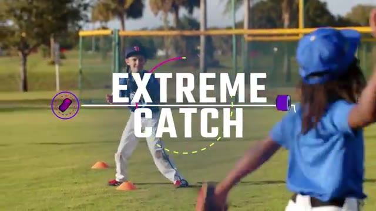
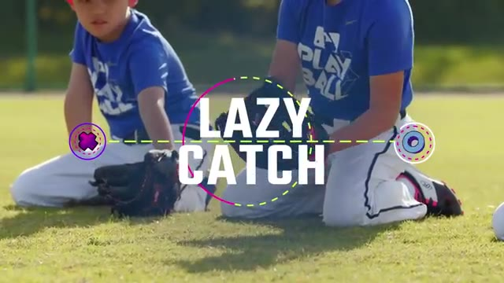
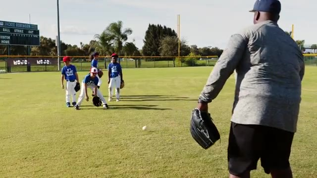
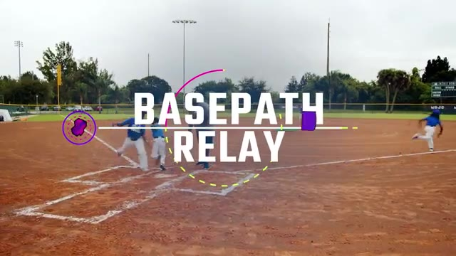
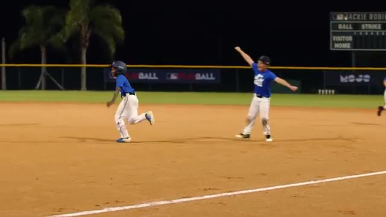
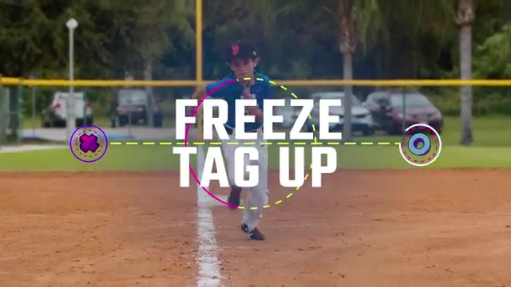
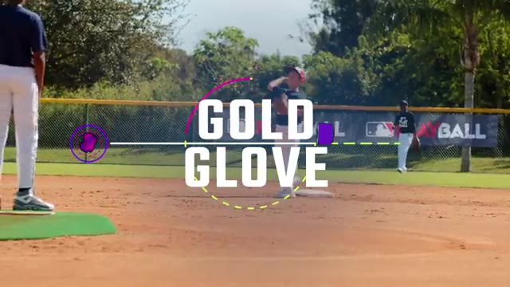
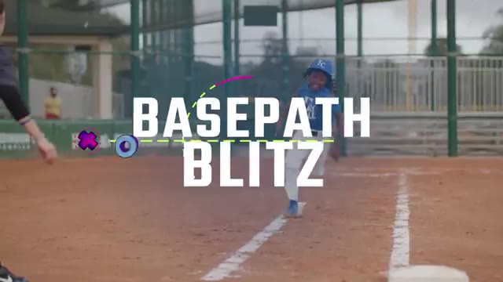
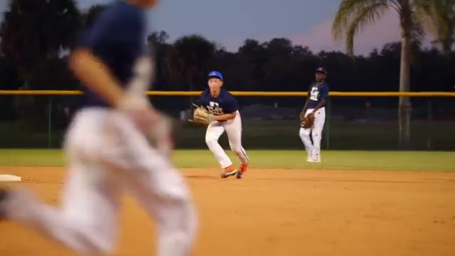

10 Most Popular Baseball Drills on MOJO | Fun Baseball Drills from the MOJO App
Auto-generated from the video. Tap a row to jump · tap "Watch" on any drill to open YouTube at the exact moment.
#01 Extreme Catch
▶ Watch on YouTube · 0:09

accuracy in this game we call extreme catch more experienced baseball and softball players use this as a warm-up to loosen their arms but for beginners you'll want to give it more structure and turn it into a game divide players into pairs then create a line using four cones thre…
#02 Lazy Catch
▶ Watch on YouTube · 1:23

grounders in this game we call lazy catch divide your team into groups of five you grab a ball and stand 15 feet away from the first player in line whether you're playing softball or baseball this game is the same here's how it looks all five players get down on both knees withou…
#03 Alligator Traps
▶ Watch on YouTube · 2:36

kids will love gobbling up grounders in this game we call alligator traps line up your team and stand 10 feet away the first player in line gets into a set stance with knees bent and hips low whether you're playing softball or baseball the game is the same here's how it looks rol…
#04 Base Path Relay
▶ Watch on YouTube · 3:41

diamond in this game we call base path relay this group over here you're going to second base all right this group here you're staying here divide players into two equal teams then divide each team in half one group from each team lines up at home base the others line up at secon…
#05 Blast Ball
▶ Watch on YouTube · 4:57

in this low stakes high fun scrimmage that we call blast ball divide your team in half with one group up at bat and the other in the field without gloves you'll pitch for both teams but instead of a metal bat you'll use a plastic one and instead of a softball or baseball you'll u…
#06 Freeze Tag Up
▶ Watch on YouTube · 7:22

fly ball in this game we call freeze tag up ask for a volunteer to play left field the rest of your team lines up by third base and you stand between third and the pitchers mound with a bucket of balls whether you're playing with baseballs or softballs this game looks exactly the…
#07 Gold Glove
▶ Watch on YouTube · 8:36

position in this game we call gold glove have your team take the field at each position you grab a bat and a bucket of balls and set up near the mound whether you're playing softball or baseball the game is the same here's how it looks hit balls to every player on the field start…
#08 Base Path Blitz
▶ Watch on YouTube · 9:57

every runner is in scoring position in this game called base path blitz here we go here we go line up your team behind home plate you stand in foul territory near one of the base paths if you have a second coach you can cover both baseball and softball players use this game to pr…
#09 Pitchers Poison
▶ Watch on YouTube · 11:27

the play is always to the mound in this game we call pitchers poison divide the group into two teams send one team to the field and one to bat you stand at the mound of the ball ready to pitch here's how it looks teams play a normal baseball or softball scrimmage with a twist all…